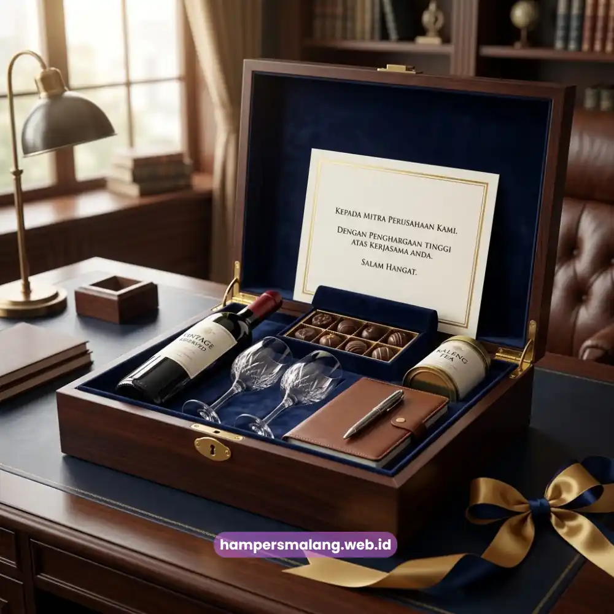

Etika pemberian hampers bisnis adalah seperangkat prinsip tidak tertulis yang memastikan hadiah korporat diberikan secara wajar, transparan, dan tidak menimbulkan kesan gratifikasi yang merugikan integritas hubungan kerja.
Prinsip ini penting karena batas antara apresiasi tulus dan potensi konflik kepentingan sering kali tipis dalam konteks bisnis.
Memahami etika ini membantu perusahaan menjaga hubungan relasi tetap profesional sekaligus terhindar dari kesalahpahaman.
- Etika hampers bisnis menekankan kewajaran nilai dan konteks pemberian.
- Transparansi menjadi prinsip penting agar hampers tidak disalahartikan sebagai gratifikasi.
- Waktu dan momen pemberian turut menentukan kesesuaian etika yang berlaku.
- Banyak perusahaan memiliki kebijakan internal terkait batas nilai hadiah yang diperbolehkan.
- Hampers Malang memahami kebutuhan hampers yang etis dan sesuai standar profesional perusahaan.
Apa Itu Etika Pemberian Hampers dalam Dunia Bisnis?
Etika pemberian hampers dalam dunia bisnis merujuk pada norma dan prinsip yang mengatur bagaimana sebuah hadiah korporat sepatutnya diberikan agar tetap berada dalam koridor profesionalisme.
Prinsip ini mencakup kewajaran nilai hadiah, kejelasan tujuan pemberian, serta kesesuaian dengan kebijakan internal masing-masing organisasi.
Dalam banyak perusahaan, terutama yang bergerak di sektor dengan regulasi ketat seperti keuangan atau instansi pemerintahan, terdapat kebijakan tertulis mengenai batas nilai hadiah yang boleh diterima maupun diberikan oleh karyawannya.
Kebijakan ini bertujuan untuk mencegah munculnya persepsi bahwa hadiah tersebut memengaruhi keputusan bisnis secara tidak semestinya.
Baca Juga: Kapan Waktu Tepat Memberikan Hampers untuk Relasi Bisnis?
Mengapa Etika Ini Penting bagi Citra Perusahaan?
Etika pemberian hampers penting karena berkaitan langsung dengan reputasi dan integritas perusahaan di mata publik maupun mitra bisnisnya.
Perusahaan yang konsisten menerapkan prinsip kewajaran dalam pemberian hadiah menunjukkan komitmennya terhadap tata kelola bisnis yang bersih dan profesional.
Sebaliknya, pemberian hampers yang berlebihan nilainya atau diberikan pada momen yang tidak tepat, misalnya menjelang proses tender penting, berisiko menimbulkan kecurigaan terhadap motif di balik pemberian tersebut.
Hal ini dapat merusak kepercayaan yang telah dibangun, bahkan berdampak pada reputasi jangka panjang perusahaan.

Bagaimana Batasan Wajar dalam Memberikan Hampers kepada Relasi?
Batasan wajar dalam memberikan hampers kepada relasi bisnis umumnya ditentukan oleh nilai nominal yang proporsional, konteks hubungan kerja, serta kebijakan internal masing-masing perusahaan terkait penerimaan hadiah.
Prinsip kesederhanaan dan kewajaran menjadi acuan utama agar pemberian tetap dipandang sebagai bentuk apresiasi, bukan upaya memengaruhi keputusan tertentu.
Menyesuaikan Nilai Hampers dengan Konteks Hubungan
Nilai hampers sebaiknya disesuaikan dengan tingkat dan lamanya hubungan kerja yang telah terjalin, bukan semata-mata berdasarkan keinginan untuk tampil mewah.
Hampers dengan nilai yang proporsional justru lebih mudah diterima secara etis dibandingkan hampers bernilai sangat tinggi yang berpotensi menimbulkan rasa sungkan atau kecurigaan dari pihak penerima.
Memperhatikan Waktu Pemberian agar Tidak Disalahartikan
Selain nilai, waktu pemberian hampers juga perlu diperhatikan agar tidak bertepatan dengan momen sensitif, seperti proses evaluasi kerja sama atau seleksi vendor.
Pemberian hampers pada momen netral, seperti akhir tahun atau hari raya, umumnya dianggap lebih sesuai dengan etika bisnis yang berlaku secara umum.
Mematuhi Kebijakan Internal Perusahaan Terkait
Setiap perusahaan, baik pengirim maupun penerima, dapat memiliki kebijakan berbeda terkait penerimaan hadiah dari pihak eksternal.
Sebelum mengirimkan hampers, ada baiknya perusahaan memastikan bahwa pemberian tersebut tidak bertentangan dengan kebijakan compliance yang berlaku di perusahaan mitra.
Bagaimana Hampers yang Etis Tetap Mempererat Hubungan Bisnis?
Hampers yang etis tetap dapat mempererat hubungan bisnis selama nilai dan konteks pemberiannya berada dalam batas kewajaran yang dapat diterima kedua belah pihak.
Fokus utama pemberian hampers seharusnya adalah menyampaikan rasa terima kasih dan apresiasi, bukan menciptakan kewajiban timbal balik yang bersifat transaksional.
Dengan menjaga prinsip kesederhanaan, transparansi, dan ketepatan momen, hampers tetap dapat berfungsi sebagai simbol penghargaan yang tulus tanpa menimbulkan dilema etika bagi penerimanya.
Etika pemberian hampers bisnis menjadi pondasi penting agar tradisi apresiasi antarperusahaan tetap berjalan secara profesional dan terhindar dari kesalahpahaman.
Dengan memperhatikan kewajaran nilai, ketepatan waktu, serta kebijakan internal masing-masing pihak, hampers dapat terus menjadi simbol hubungan bisnis yang sehat dan saling menghargai.
Tanya Jawab Seputar Etika Pemberian Hampers Bisnis
Tidak semua perusahaan memiliki kebijakan tertulis, namun banyak perusahaan besar, terutama di sektor yang diatur ketat, memiliki pedoman internal terkait batas nilai hadiah yang boleh diterima karyawannya.
Pastikan nilai hampers proporsional, waktu pemberian tidak bertepatan dengan momen sensitif seperti proses tender, serta tujuan pemberian jelas sebagai bentuk apresiasi, bukan imbalan atas keputusan tertentu.
Sebaiknya dihindari jika berpotensi disalahartikan sebagai upaya memengaruhi keputusan. Momen yang lebih aman adalah setelah kerja sama resmi berjalan atau pada hari raya dan akhir tahun.

Butuh Hampers Bisnis yang Elegan?
Solusi Hampers & Corporate Gift Kreatif Profesional.
Ditulis oleh Tim Maroon Souvenir
Sahabat mahasiswa dan pelaku bisnis di Malang Raya. Berpengalaman menangani merchandise event kampus, instansi pemerintahan, dan hotel berbintang di Batu.